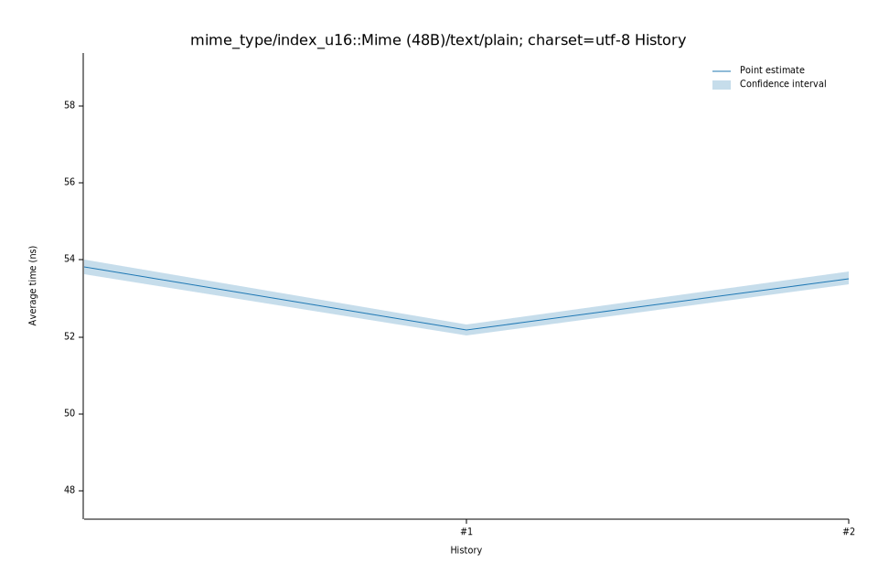

# 52025-11-08T06:59:53-08:00
|
Lower Bound |
Estimate |
Upper Bound |
| Value: |
62.06ns |
62.61ns |
63.35ns |
| Throughput: |
384.15MiB/s |
380.80MiB/s |
376.36MiB/s |
| Change in Value: |
-1.4011% |
-0.0827% |
+1.4887% |
| Change in Throughput: |
+1.4210% |
+0.0828% |
-1.4669% |
Change within noise threshold.
# 42025-11-08T06:55:46-08:00
|
Lower Bound |
Estimate |
Upper Bound |
| Value: |
62.31ns |
62.73ns |
63.20ns |
| Throughput: |
382.65MiB/s |
380.05MiB/s |
377.26MiB/s |
| Change in Value: |
+7.7388% |
+10.309% |
+12.657% |
| Change in Throughput: |
-7.1829% |
-9.3459% |
-11.235% |
No change in performance detected.
# 32025-10-14T15:36:03-07:00
|
Lower Bound |
Estimate |
Upper Bound |
| Value: |
54.79ns |
55.15ns |
55.72ns |
| Throughput: |
435.12MiB/s |
432.33MiB/s |
427.86MiB/s |
| Change in Value: |
+2.5253% |
+5.0536% |
+7.4712% |
| Change in Throughput: |
-2.4631% |
-4.8105% |
-6.9518% |
No change in performance detected.
# 22025-10-05T14:43:39-07:00
|
Lower Bound |
Estimate |
Upper Bound |
| Value: |
53.36ns |
53.52ns |
53.70ns |
| Throughput: |
446.82MiB/s |
445.51MiB/s |
443.98MiB/s |
| Change in Value: |
+1.5410% |
+3.2146% |
+4.8153% |
| Change in Throughput: |
-1.5176% |
-3.1145% |
-4.5940% |
No change in performance detected.
# 12025-10-05T13:02:17-07:00
|
Lower Bound |
Estimate |
Upper Bound |
| Value: |
52.03ns |
52.17ns |
52.32ns |
| Throughput: |
458.25MiB/s |
457.03MiB/s |
455.68MiB/s |
| Change in Value: |
-3.7674% |
-2.6040% |
-1.2596% |
| Change in Throughput: |
+3.9149% |
+2.6736% |
+1.2757% |
No change in performance detected.
# 02025-10-05T13:00:26-07:00
|
Lower Bound |
Estimate |
Upper Bound |
| Value: |
53.62ns |
53.81ns |
54.01ns |
| Throughput: |
444.61MiB/s |
443.09MiB/s |
441.44MiB/s |